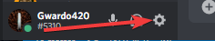
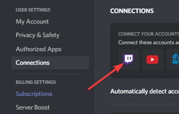
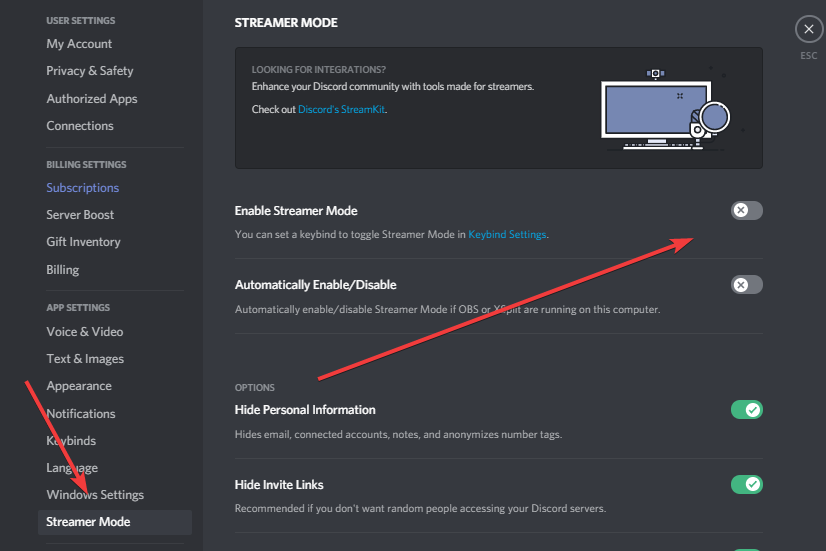

2. Goto Connections & Select Twitch
3. Enable Streamer Mode
Tweet Cooldowns:
Please note that Tweets have a 5 minute cool down, that means if someone goes live before you do it will take 5 mins to send another tweet out.
This is due to the Twitter API and will be accessed in the future to allow maximum capicity. Thank you for understanding.